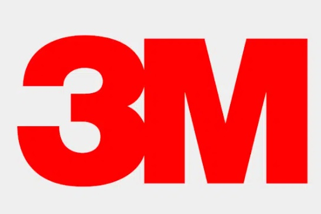
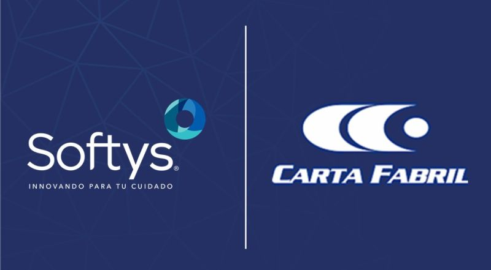

Minnesota Mining and Manufacturing Company - 3M
Data analyst
AUG 2025 - Present
- Support planning team;
- Maintenance and development of a Data Warehouse, data engineering;
- Search for commercial opportunities, development of analysis and tools to control the main KPI's of profit and invoice;
- Strategic Decision support
- Development of operation/tactical reports for commercial;
- Development of intern process and tools;
- Investigation and emission of reports with sensitive information (commissioning and results);
- Leading presentations.

Softys / Carta Fabril
Business Analyst
AUG 2020 - SEP 2022 (2 years)
- Development of tools for analysis and management of consumption;
- Development of indicators for industrial performance;
- Management of departmental routines;
- Analysis of raw material consumption and enforcement of targeted actions;
- Creation of inventory and production controls;
- Optimization of control and analysis tools.
- Private lessons for up to three students per class;
- Students from elementary, middle, and high school as well as college;
- Teaching of mathematics, statistics, physics, chemistry, calculus, static mechanics, and numerical methods.